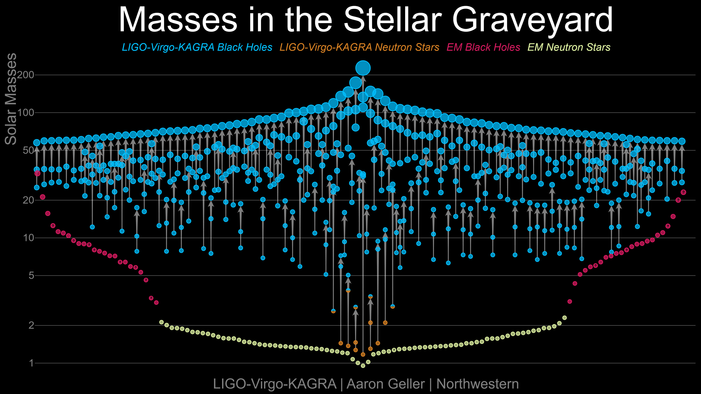
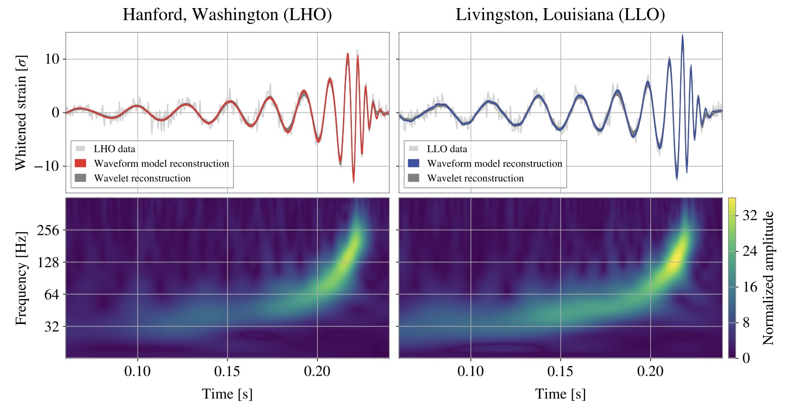
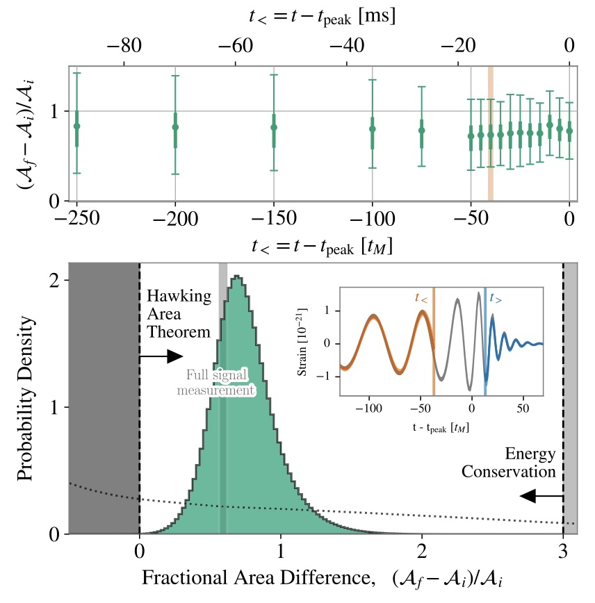
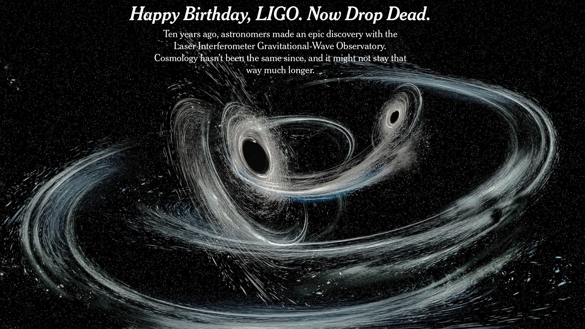

### Ringing Black Hole Bells and Other Exciting Recent Results in Gravitational Wave Astronomy [Will M. Farr](https://farr.github.io) Stony Brook University <br /> Center for Computational Astrophysics <br /> <a href="https://github.com/farr/AstroOpenNight20260306"><img src="images/github-mark.svg" height="150" width="150" /></a> <span class="attribution">2024-11-01</span> --- <img src="images/LSC.png" class="r-stretch" /> --- I am an astronomer <img src="images/swope.webp" class="r-stretch" /> <span class="attribution"><a href="https://carnegiescience.edu/instrumentation/our-telescopes">Carnegie Observatories</a></span> --- I am an astronomer who uses gravitational waves to learn about black holes (and the universe) <img src="images/LIGO_hanford.webp" class="r-stretch" /> <span class="attribution"><a href="https://ligo.org/multimedia/">LIGO</a></span> --- What are gravitational waves? <img src="images/Black_hole_merger.webp" height="300" /> <br /> <img class="r-stretch" src="images/pol_ellip.gif" /> <span class="attribution"><a href="https://ligo.org/multimedia/">R. Hurt, Caltech</a>; <a href="https://github.com/maxisi/gwpols">Max Isi</a></span> --- <img src="images/LIGO_hanford.webp" class="r-stretch" /> <span class="attribution"><a href="https://ligo.org/multimedia/">LIGO</a></span> --- <iframe width="560" height="315" src="https://www.youtube-nocookie.com/embed/UA1qG7Fjc2A?si=XtHGZc4tkeMg8mfs" title="YouTube video player" frameborder="0" allow="accelerometer; autoplay; clipboard-write; encrypted-media; gyroscope; picture-in-picture; web-share" referrerpolicy="strict-origin-when-cross-origin" allowfullscreen></iframe> --- $f_{\mathrm{GW},\mathrm{ISCO}} = 200 \, \mathrm{Hz} \frac{10 M_\odot}{M}$ <!-- .element: class="fragment"--> $h = \mathcal{O}\left(1 \right) \frac{r_\mathrm{Schw}}{r} \simeq 2 \times 10^{-22} \, \frac{M}{10 M_\odot} \, \frac{10 Gpc}{r}$ <!-- .element: class="fragment"--> <img class="r-stretch" src="images/detection-figure3.png" /> <span class="attribution"><a href="https://ui.adsabs.harvard.edu/abs/2016PhRvL.116f1102A/abstract">Abbott, et al. (2016)</a></span> --- ## GW150914 <img class="r-stretch" src="images/gw150914-fig1.png" /> <span class="attribution"><a href="https://link.aps.org/doi/10.1103/PhysRevLett.116.061102">Abbott, et al. (2016)</a></span> --- <iframe width="900" height="506" src="https://www.youtube.com/embed/kkKDs59zcdI" title="GW150914: Gravitational waves from LIGO's first detection" frameborder="0" allow="accelerometer; autoplay; clipboard-write; encrypted-media; gyroscope; picture-in-picture; web-share" referrerpolicy="strict-origin-when-cross-origin" allowfullscreen></iframe> <span class="attribution"><a href="https://ligo.org/multimedia/">LIGO / SXS</a></span> --- ## GW170817 <iframe width="891" height="501" src="https://www.youtube.com/embed/-Yt5EmEgz2w" title="Discovery Plot: GRB170817A" frameborder="0" allow="accelerometer; autoplay; clipboard-write; encrypted-media; gyroscope; picture-in-picture; web-share" referrerpolicy="strict-origin-when-cross-origin" allowfullscreen></iframe> <span class="attribution"><a href="https://ligo.org/multimedia/">LIGO</a></span> --- <iframe width="900" height="506" src="https://www.youtube.com/embed/V6cm-0bwJ98" title="Simulation of the neutron star coalescence GW170817" frameborder="0" allow="accelerometer; autoplay; clipboard-write; encrypted-media; gyroscope; picture-in-picture; web-share" referrerpolicy="strict-origin-when-cross-origin" allowfullscreen></iframe> <span class="attribution"><a href="https://ligo.org/multimedia/">LIGO</a></span> --- <img class="r-stretch" src="images/gw170817.png" /> <span class="attribution"><a href="https://iopscience.iop.org/article/10.3847/2041-8213/aa9059">Soares-Santos, et al. (2017)</a></span> --- <div class="r-stack"> <img src="images/hubble-hubble.png" class="fragment fade-out" data-fragment-index="0" /> <img src="images/hubble-gw.png" class="fragment" data-fragment-index="0" /> </div> <span class="attribution"><a href="http://www.nature.com/articles/nature24471">Abbott, et al. (2017)</a>; <a href="https://doi.org/10.1073/pnas.15.3.168">Hubble (1929)</a></span> --- By Now, This Is Becoming "Routine" <p></p> <span class="attribution"><a href="http://ligo.org/science-summaries/O3bCatalog/">LIGO</a>; <a href="https://ui.adsabs.harvard.edu/abs/2025ApJ...995L..18A/abstract">Abac, et al. (2025)</a></span> --- <a href="https://gracedb.ligo.org/superevents/public/O4/">GraceDB</a> <iframe class="r-stretch" data-src="https://gracedb.ligo.org/superevents/public/O4/" data-preload /> --- # Ringdown --- <iframe width="900" height="506" src="https://www.youtube.com/embed/kkKDs59zcdI" title="GW150914: Gravitational waves from LIGO's first detection" frameborder="0" allow="accelerometer; autoplay; clipboard-write; encrypted-media; gyroscope; picture-in-picture; web-share" referrerpolicy="strict-origin-when-cross-origin" allowfullscreen></iframe> <span class="attribution"><a href="https://ligo.org/multimedia/">LIGO / SXS</a></span> --- Can You Hear The Shape of a Drum? <img src="images/drum.png" class="r-stretch" /> <span class="attribution"><a href="https://mathoverflow.net/questions/227707/can-you-hear-the-shape-of-a-drum-by-choosing-where-to-drum-it">Math Overflow</a></span> --- You *Can* "See" The Shape of an Atom <img src="images/Fraunhofer_lines.svg" class="r-stretch" /> <span class="attribution"><a href="https://en.wikipedia.org/wiki/Fraunhofer_lines">Wikipedia</a></span> --- You *Can* "See" The Shape of an Atom <img src="images/LymanSeries.svg" class="r-stretch" /> $$\frac{1}{\lambda} = R_H \left( 1 - \frac{1}{n^2} \right)$$ <span class="attribution"><a href="https://en.wikipedia.org/wiki/Lyman_series">Wikipedia</a></span> --- Can We Hear The Shape of a Black Hole? <img class="r-stretch" src="images/gw150914-fig1.png" /> <span class="attribution"><a href="https://link.aps.org/doi/10.1103/PhysRevLett.116.061102">Abbott, et al. (2016)</a></span> --- <iframe width="900" height="506" src="https://www.youtube.com/embed/kkKDs59zcdI" title="GW150914: Gravitational waves from LIGO's first detection" frameborder="0" allow="accelerometer; autoplay; clipboard-write; encrypted-media; gyroscope; picture-in-picture; web-share" referrerpolicy="strict-origin-when-cross-origin" allowfullscreen></iframe> <span class="attribution"><a href="https://ligo.org/multimedia/">LIGO / SXS</a></span> --- <img src="images/giesler.png" class="r-stretch" /> <span class="attribution"><a href="https://link.aps.org/doi/10.1103/PhysRevX.9.041060">Giesler, et al. (2019)</a></span> --- <img src="images/isi-farr.png" class="r-stretch" /> <span class="attribution"><a href="http://arxiv.org/abs/2107.05609">Isi & Farr (2021)</a></span> --- <img src="images/LymanSeries.svg" class="r-stretch" /> $$\frac{1}{\lambda} = R_H \left( 1 - \frac{1}{n^2} \right)$$ <span class="attribution"><a href="https://en.wikipedia.org/wiki/Lyman_series">Wikipedia</a></span> --- <img src="images/examples_GW150914_60_0.webp" class="r-stretch" /> <span class="attribution"><a href="https://link.aps.org/doi/10.1103/PhysRevLett.123.111102">Isi, et al. (2019)</a>; <a href="https://ringdown.readthedocs.io/en/latest/examples/GW150914.html">ringdown</a></span> --- <img src="images/tgr.png" class="r-stretch" /> <span class="attribution"><a href="https://link.aps.org/doi/10.1103/PhysRevLett.123.111102">Isi, et al. (2019)</a></span> --- Not Yet "Routine," But Getting There <img src="images/gw190521.png" class="r-stretch" /> <span class="attribution"><a href="https://link.aps.org/doi/10.1103/PhysRevD.108.064008">Siegel, Isi, & Farr (2023)</a></span> --- # Black Hole Thermodynamics <!-- .element: class="r-fit-text" --> --- A Black Hole: <img src="images/eht.png" width="600" height="350" /> <span class="attribution"><a href="https://eventhorizontelescope.org/press-release-april-10-2019-astronomers-capture-first-image-black-hole">EHT</a></span> --- A Black Hole (More Mass): <img src="images/eht.png" width="800" height="466" /> <span class="attribution"><a href="https://eventhorizontelescope.org/press-release-april-10-2019-astronomers-capture-first-image-black-hole">EHT</a></span> --- A Black Hole (More Spin): <img src="images/eht.png" width="600" height="200" /> <span class="attribution"><a href="https://eventhorizontelescope.org/press-release-april-10-2019-astronomers-capture-first-image-black-hole">EHT</a></span> --- Black hole areas can only increase (the "Area Law") <!-- .element: class="r-fit-text" --> <span class="attribution"><a href="https://doi.org/10.1007%2FBF02757029">Beckenstein (1972)</a>; <a href="https://doi.org/10.1007%2FBF02345020">Hawking (1975)</a></span> --- <iframe width="900" height="506" src="https://www.youtube.com/embed/kkKDs59zcdI" title="GW150914: Gravitational waves from LIGO's first detection" frameborder="0" allow="accelerometer; autoplay; clipboard-write; encrypted-media; gyroscope; picture-in-picture; web-share" referrerpolicy="strict-origin-when-cross-origin" allowfullscreen></iframe> <span class="attribution"><a href="https://ligo.org/multimedia/">LIGO / SXS</a></span> --- <img src="images/early-late-150914.png" class="r-stretch" /> <span class="attribution"><a href="https://arxiv.org/abs/2012.04486">Isi, et al. (2021)</a></span> --- <img src="images/area.png" class="r-stretch" /> <span class="attribution"><a href="https://arxiv.org/abs/2012.04486">Isi, et al. (2021)</a></span> --- If You Want to Know More in the <a href="https://www.nytimes.com/2021/10/04/science/hawking-nobel-black-hole.html?unlocked_article_code=1.Wk4.PgF4._7pH8XxA0ZPo&smid=url-share">New York Times</a> --- ## GW250114 That was then, this is now: <p></p> <span class="attribution"><a href="https://journals.aps.org/prl/abstract/10.1103/kw5g-d732">Abac, et al. (2025)</a></span> --- ## GW250114 <p></p> <span class="attribution"><a href="https://journals.aps.org/prl/abstract/10.1103/kw5g-d732">Abac, et al. (2025)</a></span> --- And it got picked up in the <a href="https://www.nytimes.com/2025/09/10/science/gravitational-waves-ligo-black-holes.html">New York Times</a> again: <p></p> --- This is Only the Beginning of GW Astrophysics - [Pulsar Timing Arrays](https://nanograv.org) <!-- .element: class="fragment" --> - [Cosmic Explorer](https://cosmicexplorer.org) <!-- .element: class="fragment"--> - [LISA](https://lisa.nasa.gov) <!-- .element: class="fragment" --> <br />